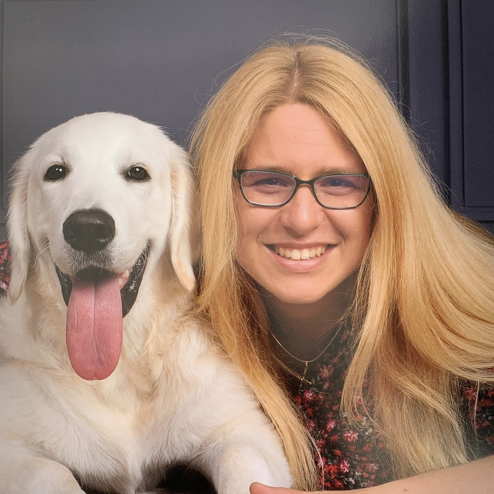

Services

We offer individualized, family-centered speech and language services designed to support each child’s unique communication needs. Sessions are engaging, play-based, and tailored to promote meaningful progress.
We offer individualized, family-centered speech and language services designed to support each child’s unique communication needs. Sessions are engaging, play-based, and tailored to promote meaningful progress.
Support for articulation and phonological development to improve speech intelligibility.
Building comprehension and expressive language skills for effective communication.
Helping children develop conversational skills with perspective-taking for improved social interaction.
Guidance with augmentative and alternative communication systems, including funding and programming.
Play-based therapy for infants and toddlers to support early communication development.
Equipping caregivers with practical strategies to support communication in everyday routines.
Services typically begin with an initial evaluation, followed by individualized therapy sessions. Close collaboration with with families is prioritized to ensure strategies carry over into daily life, supporting consistent and lasting progress.

If you’re interested in services or have questions about your child’s communication, let's connect!
Request a Consultation